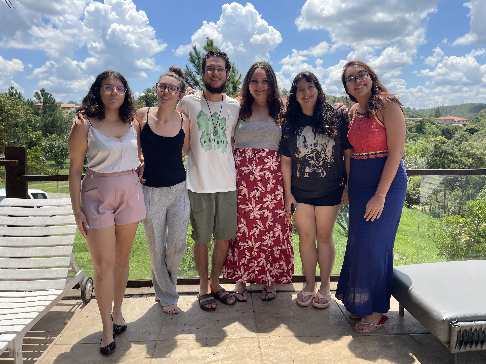
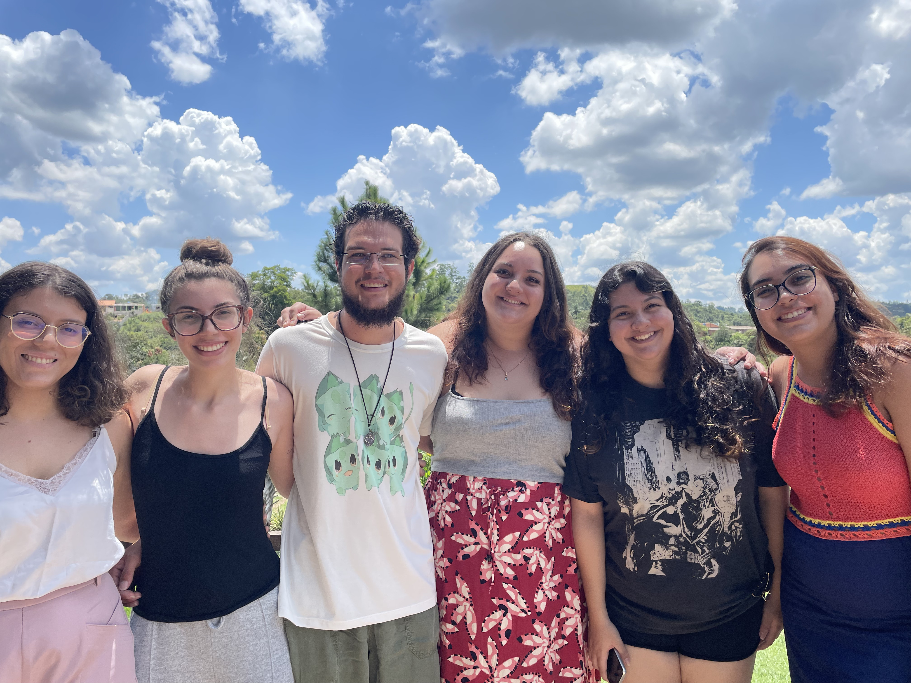
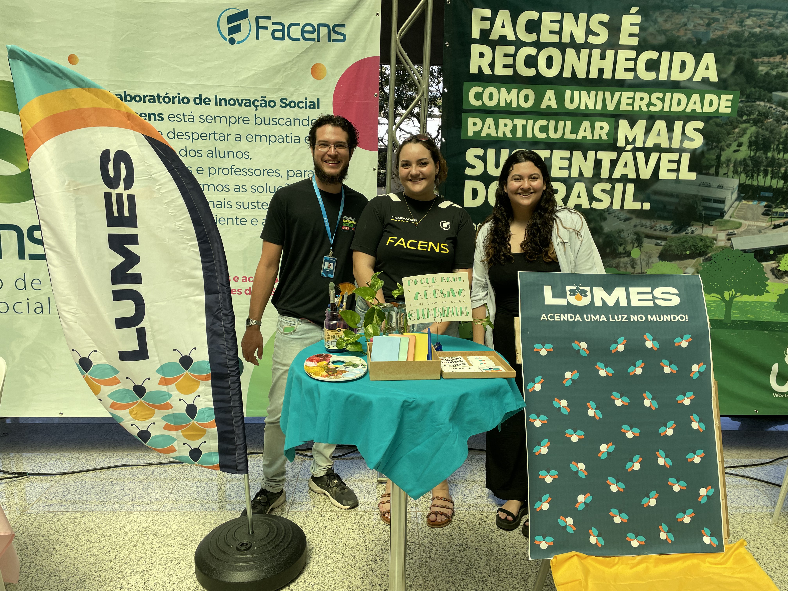
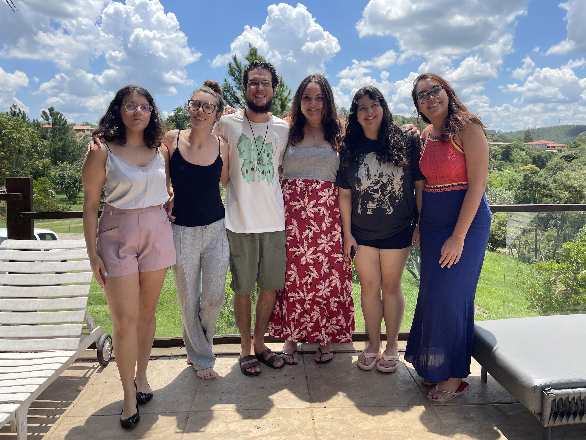
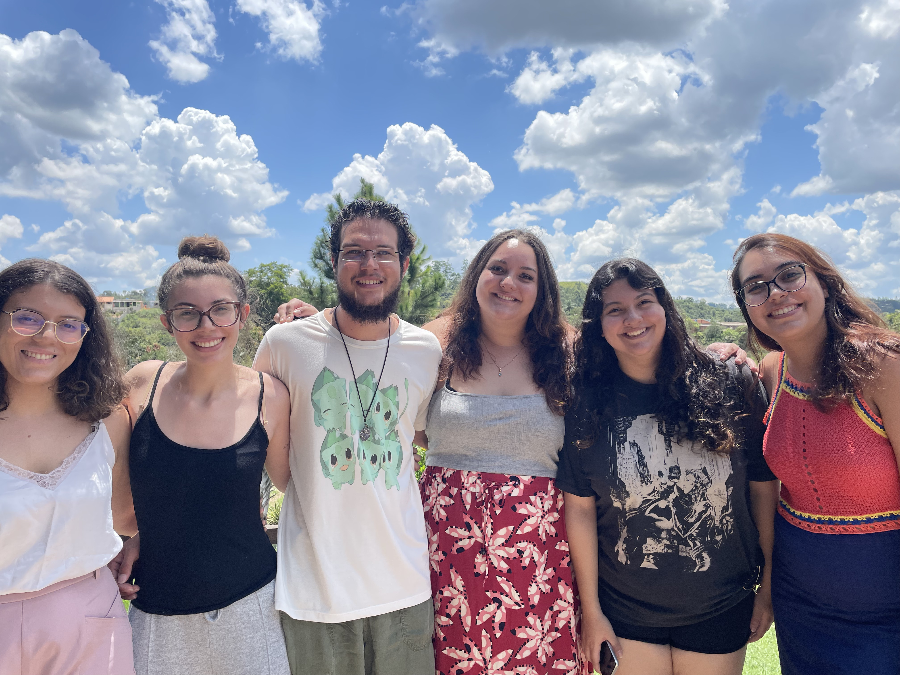
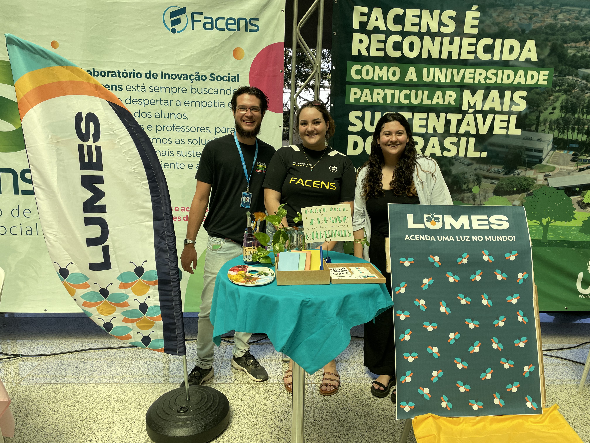

O que é o LUMES?
O LUMES (Liga Universitária de Mobilização Ecológica e Social) tem suas raízes
no antigo Comitê Estudantil, fundado em 2023 com a missão de promover a
conscientização e a ação em prol de causas ecológicas e sociais.
Em 2025, nossa
identidade evoluiu e adotamos o nome LUMES, simbolizando a luz do conhecimento e
a esperança que queremos espalhar por meio de iniciativas transformadoras.
Somos uma comunidade acadêmica que se une para enfrentar desafios ambientais e
sociais, estimulando a inclusão, o engajamento e a inovação em prol de um futuro
sustentável.
 





Nossa Missão e Futuros Projetos
No LUMES, nossa missão vai muito além da conscientização: buscamos transformar
a realidade por meio de projetos que promovam a integração social e a preservação ambiental.
A Horta Comunitária, por exemplo, é uma iniciativa que visa incentivar a produção sustentável
de alimentos, estimular o trabalho colaborativo e oferecer uma alternativa saudável à comunidade.
Nossa Feira Cultural e os projetos de plantio de árvores reforçam a importância da preservação
do meio ambiente, promovendo o resgate das tradições locais e o fortalecimento dos laços
comunitários.
Além disso, realizamos visitas a locais históricos, culturais e reservas naturais
com o objetivo de criar e disseminar conteúdos que inspiram a experimentação, o aprendizado prático
e o desenvolvimento de uma consciência ecológica e cidadã. Cada ação é pensada para deixar um impacto positivo,
contribuindo para a construção de um legado de responsabilidade, inovação e colaboração.

Quer fazer parte do LUMES?
Se você acredita que a mobilização ecológica e social é a chave para transformar nossa realidade, o LUMES é o seu lugar. Ao se inscrever, você passará a fazer parte de um grupo de alunos dedicados a construir uma comunidade mais sustentável, inclusiva e engajada. Aqui, você terá a oportunidade de participar ativamente de projetos inovadores, desenvolver novas habilidades, trocar experiências e contribuir para iniciativas que realmente fazem a diferença na sociedade. Junte-se a nós nesta jornada transformadora e ajude a criar um futuro onde o cuidado com o meio ambiente e o compromisso social caminhem lado a lado.